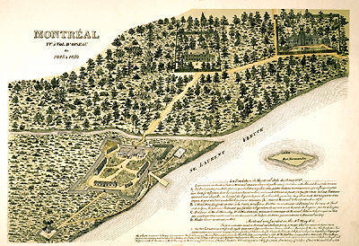
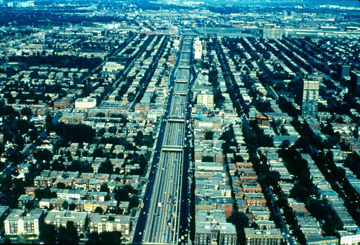
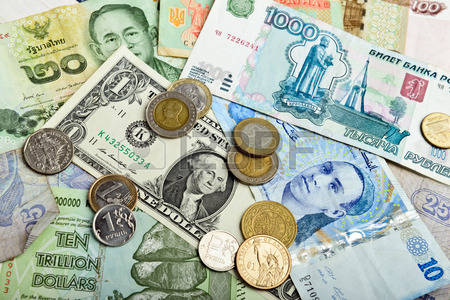

History
Settlement |
| 
The present-day island of Montréal and the surrounding areas were long inhabited by the St. Lawrence Iroquoians. The island was a good site for settlement due to the natural resources nearby, and the St. Lawrence River and Lachine Rapids made it necessary for travellers to stop there and unload their boats. In 1535 French navigator Jacques Cartier visited one of their villages, Hochelaga, a large village made up of approximately 50 longhouses and a population of approximately 1,500 people located on the slopes of Mont Royal, a small mountain of volcanic origin. The residents of Hochelaga were primarily agriculturalists, but also ate fish and game. For reasons that remain unclear, but may include European diseases and wars with other groups, the St Lawrence Iroquoians disappeared as a distinct nation by the late 16th century. Montréal (sometimes also called Ville-Marie) was founded in 1642 as a missionary colony under the direction of Paul de Chomedey de Maisonneuve and Jeanne Mance, but the fur trade soon became its main activity. Maisonneuve and his group of four dozen colonists were caught in a storm of conflict between Aboriginal peoples for control of the fur supply. A permanent state of war with the Iroquois marked the early decades of the colony's existence (see also Iroquois Wars). In 1665 Louis XIV sent 1,200 French troops to the colony, and these troops attacked the Iroquois the following year. Permanent peace was only established in 1701 with the conclusion of a major treaty, La Grande Paix, between the French, the Iroquois and more than 30 other Aboriginal groups.
|
Development |
| 
The settlement of the Canadian West was also important for Montréal development, as in the 1880s the Canadian Pacific Railway established its head office in the city. This meant that much western grain was shipped overseas through the port of Montréal, which was considerably enlarged at the beginning of the 20th century. In this period Montréal was indisputably the metropolis of Canada, and St-Jacques (St. James) Street was the country's financial centre. However, Toronto was a powerful rival, and benefited more in the long run from western settlement and from the growing trade with the United States. By 1960 Toronto had taken over Montréal place as Canada's centre of economic activity, in part because of American industrial capital invested in Ontario.
Montréal experienced another period of growth after the First World War that was based on industry, trade, finance and transportation. In 1931 the population of the city and suburbs reached over one million, but the Great Depression brought this period of expansion to a halt and caused great hardship among the population. At the Depression's height in February 1934 there were 62,000 unemployed people in the city, and 240,000 receiving government assistance. The city administration went into debt because of huge relief expenses and in the early 1940s was placed under trusteeship by the provincial government. The Second World War stimulated production and employment and helped restore prosperity to the city. The 1950s and 1960s saw strong growth, especially in the suburbs where many new cities sprang up, as well as in the downtown area. Montréal embarked upon great projects under the leadership of Mayor Jean Drapeau, several on an international scale. The Métro subway system began in 1966, the International World Exposition took place in 1967 (see Expo 67), and the 1976 Summer Olympic Games and the 1980 Floralies Internationales horticultural fair were hosted by the city. The Métro and Expo 67 were undertaken during a period of relative prosperity, but in the 1970s the city was in economic decline. After a long and painful period of industrial reorganization marked by high unemployment Montréal regained a strong vitality in the mid-1990s, and entered the 21st century with a modernized and buoyant economy. |
Economy & Labour |
| 
In the late 1960s Montréal experienced much slower growth than in previous decades. Toronto rise as the unchallenged metropolis of Canada led to hundreds of corporate head offices relocating there. This process gained momentum during the 1960s and 1970s and was fuelled in part by many anglophones' fears of the changing political and linguistic environment. This loss was only partly offset by the tremendous rise of major corporations owned or developed by francophone entrepreneurs (such as Bombardier or Qubéecor) or by the provincial government (Hydro-Québec and Caisse de Dépt et Placement).
Montréal economy was also deeply shaken at the same time by a major industrial reshuffling that affected most of the manufacturing centres of North America and Europe. The city old manufacturers of consumer products geared to the domestic market were no match for growing international competition. They closed their doors in droves, and the remaining manufacturers turned to highly automated production for niche markets to survive. The depressions of the early 1980s and 1990s also hit the city particularly hard, and unemployment rose dramatically. Despite social and economic hardship the whole metropolitan area emerged from this fundamental reshuffling with a modernized and competitive industrial structure. The city experienced a burst of activity during the second half of the 1980s, and saw sustained growth from the mid-1990s. Montréal remains the second-largest metropolis in the country and hosts the headquarters of a number of Canada's major corporations. It is also a leading research and development centre, with its four universities and numerous research institutes and laboratories in areas such as telecommunications, pulp and paper, aerospace, software and pharmaceuticals. The 2008 recession, however, led to a downturn of manufacturing and construction in the city, and recovery has been slow. |